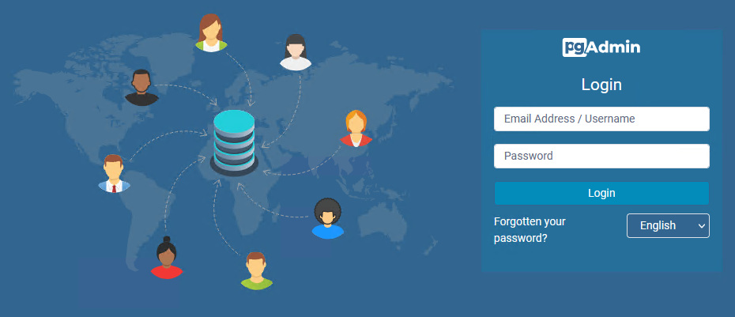

Dockerコンテナで構築したPostgreSQLとpgAdminの組み合わせで、ブラウザからpgAdminに接続できないケースを確認したのでメモしてみます。同じ症状に見舞われている方の参考になれば幸いです。
ブラウザからpgAdminへアクセスできません。
docker-compose.ymlのファイル内にて定義したpgAdminのコンテナに対し、ブラウザからlocalhost:8000（URLの例。ポートはymlの設定次第で可変）などのURLにアクセスすると、本来はpgAdminのログイン画面が表示されるはずです。

上記のようなログイン画面が本来は表示されるはずなんです。
が、なぜか表示されません。
タイムアウトになるわけでもなく、ただただ真っ白な画面が表示されるだけです。こりゃおかしいぞ、というわけで調査開始。
コンテナそのものではなく、コンテナ内で利用するボリュームの権限が問題でした。以下で解説します。
version: "3"
services:
postgres:
image: postgres
container_name: sample_postgres
ports:
- 5432:5432
environment:
POSTGRES_USER: root
POSTGRES_PASSWORD: root
POSTGRES_DB: sample_db
volumes:
- ./initdb:/docker-entrypoint-initdb.d
- ./postgres:/var/lib/postgresql/data
pgadmin:
image: dpage/pgadmin4
container_name: sample_pgadmin
restart: always
ports:
- 8000:80
environment:
PGADMIN_DEFAULT_EMAIL: admin@example.com
PGADMIN_DEFAULT_PASSWORD: admin
volumes:
- ./pgadmin:/var/lib/pgadmin
depends_on:
- postgres
volumes:
postgres:
pgadmin:今回のDockerコンテナは、上記のようなdocker-compose.ymlを基に作成しました。内容としてはPostgreSQLとpgAdminのみです。コンテナのビルド時もとくにエラーは出ずに正常終了しました。
ただ、構築したコンテナのpgAdminにブラウザからアクセスすると「あれ？表示されないぞ？」になった、というわけですね。
タイムアウトにならないところを見ると、ブラウザ自体はコンテナに対しアクセスできており、コンテナからの返答も返ってきていると考えるのが妥当です。そうなると、少なくともコンテナ自体は正常に起動しており、ブラウザからのアクセスを受け付ける状態にはなっているのでしょう。ただ、ブラウザには何も表示されないことから、アクセスを受け付けた後の処理で何かしらの異常が出ていると考えられます。
こういう場合はコンテナのログを確認します。
docker logs sample_pgadmin上記のコマンドを実行することで、コンテナのログを出力可能です。
[2022-10-04 01:10:25 +0000] [24430] [INFO] Booting worker with pid: 24430
[2022-10-04 01:10:27 +0000] [24430] [INFO] Worker exiting (pid: 24430)
ERROR : Failed to create the directory /var/lib/pgadmin/sessions:
[Errno 13] Permission denied: '/var/lib/pgadmin/sessions'
HINT : Create the directory /var/lib/pgadmin/sessions, ensure it is writeable by
'pgadmin', and try again, or, create a config_local.py file
and override the SESSION_DB_PATH setting per
https://www.pgadmin.org/docs/pgadmin4/6.14/config_py.html
[2022-10-04 01:10:27 +0000] [24431] [INFO] Booting worker with pid: 24431
ERROR : Failed to create the directory /var/lib/pgadmin/sessions:
[Errno 13] Permission denied: '/var/lib/pgadmin/sessions'
HINT : Create the directory /var/lib/pgadmin/sessions, ensure it is writeable by
'pgadmin', and try again, or, create a config_local.py file
and override the SESSION_DB_PATH setting per
https://www.pgadmin.org/docs/pgadmin4/6.14/config_py.html
[2022-10-04 01:10:29 +0000] [24431] [INFO] Worker exiting (pid: 24431)
[2022-10-04 01:10:29 +0000] [24432] [INFO] Booting worker with pid: 24432
ERROR : Failed to create the directory /var/lib/pgadmin/sessions:
[Errno 13] Permission denied: '/var/lib/pgadmin/sessions'
HINT : Create the directory /var/lib/pgadmin/sessions, ensure it is writeable by
'pgadmin', and try again, or, create a config_local.py file
and override the SESSION_DB_PATH setting per
https://www.pgadmin.org/docs/pgadmin4/6.14/config_py.html
...（以下、同じようなエラーメッセージが並ぶ）見てみると、同じエラーがずっと出力されていることがわかります。内容は「/var/lib/pgadmin/sessionsというフォルダが権限のせいで作れないぞ」というエラーです。どうもアクセスのたびにこのメッセージが出力されているようです。原因がこれなら、権限を変えちゃえばいいわけですね。
対象のフォルダに権限を付与します。ということで、まずはpgAdminのコンテナにログインします。
docker exec -u 0 -it sample_pgadmin /bin/sh上記のコマンドを実行して、pgAdminのコンテナに入ります。UIDの0を指定しているのは、次に実行するコマンドのためです。UIDを指定しないとpgadminというユーザーでログインしたのですが、このユーザーだと権限を変更するコマンドを発行できませんでした。
# cd /var/lib/
/var/lib # ls -al
total 40
drwxr-xr-x 1 root root 4096 Sep 20 09:26 .
drwxr-xr-x 1 root root 4096 Sep 20 09:26 ..
drwxr-xr-x 2 root root 4096 Aug 9 08:47 apk
drwxr-xr-x 2 root root 4096 Aug 9 08:47 misc
drwxr-xr-x 2 root root 4096 Oct 3 10:45 pgadmin
drwx------ 1 postfix root 4096 Oct 3 10:46 postfix
drwx--x--x 3 root root 4096 Sep 20 09:26 sudo
drwxr-xr-x 2 root root 4096 Aug 9 08:47 udhcpd該当フォルダの権限を確認してみます。drwxr-xr-xになっていますが、「これじゃ足りねぇよ！」ということらしいです。
chmod -R 777 /var/lib/pgadminじゃあWをつけりゃいいんでしょ？ということで、上記のコマンドを実行して、フォルダの権限を変更します。
# ls -al
total 40
drwxr-xr-x 1 root root 4096 Sep 20 09:26 .
drwxr-xr-x 1 root root 4096 Sep 20 09:26 ..
drwxr-xr-x 2 root root 4096 Aug 9 08:47 apk
drwxr-xr-x 2 root root 4096 Aug 9 08:47 misc
drwxrwxrwx 5 root root 4096 Oct 4 02:07 pgadmin
drwx------ 1 postfix root 4096 Oct 3 10:46 postfix
drwx--x--x 3 root root 4096 Sep 20 09:26 sudo
drwxr-xr-x 2 root root 4096 Aug 9 08:47 udhcpdこれでフォルダの権限が変更できました。
権限を変更後、ブラウザからpgAdminにアクセスすると・・・無事に表示されました！良かった良かった。
なんか変ならdocker logs。
コンテナはとりあえず起動している、でもなんか挙動がおかしい。そういうときは該当コンテナについてdocker logsを実行してみて、内容を確認することをオススメします。Dockerfileやdocker-compose.ymlの内容自体は問題なくても、構築したあとのコンテナが妙なところで変な挙動を指定る可能性があるからです。今回みたいなやつですね。